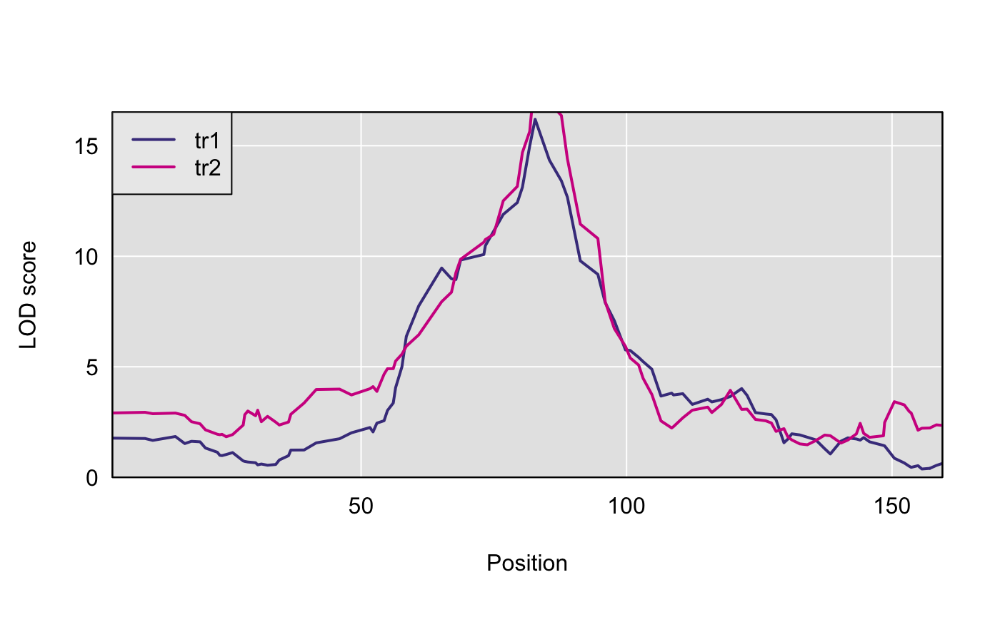
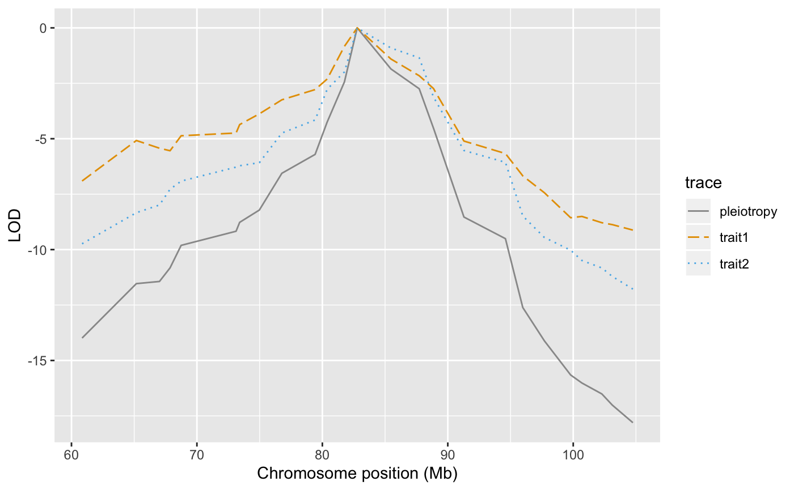

vignettes/testing-pleiotropy-vs-separate-qtl.Rmd
testing-pleiotropy-vs-separate-qtl.RmdOur setting involves a pair of traits, \(Y_1\) and \(Y_2\), each of which individually (univariately) maps to a single genomic region. \(Y_1\) and \(Y_2\) are both measured on the same subjects. The exact definition of a genomic region is imprecise; in practice, it may be as large as 4 or 5 Mb. We seek to distinguish whether \(Y_1\) and \(Y_2\) associations (in the genomic region of interest) arise due to a single QTL or whether there are two two distinct loci, each of which associates with exactly one of the two traits. We recognize that more complicated association patterns are possible, but we neglect them in this test.
qtl2pleio
We install qtl2pleio from github via the devtools R package, which is available from CRAN.
To install qtl2pleio, use install_github() from the devtools package.
You may also wish to install R/qtl2 and the qtl2convert package. We will use both below.
The above line only needs to be run once on a given computer (unless you wish to install a newer version of the package).
We then load the library into our R session with the library command:
We’ll work with data from the qtl2data repository, which is on github. First, we install and load the qtl2 package.
We use the above line once to install the package on our computer before loading the package with the library command.
qtl2data repository on githubWe’ll consider the DOex data in the qtl2data repository. We’ll download the DOex.zip file before calculating founder allele dosages.
file <- paste0("https://raw.githubusercontent.com/rqtl/", "qtl2data/master/DOex/DOex.zip")
DOex <- read_cross2(file)Let’s calculate the founder allele dosages from the 36-state genotype probabilities.
We now have an allele probabilities object stored in pr.
We see that pr is a list of 3 three-dimensional arrays - one array for each of 3 chromosomes.
We now have an allele probabilities object stored in pr.
We see that pr is a list of 3 three-dimensional arrays - one array for each of 3 chromosomes.
For our statistical model, we need a kinship matrix. Although we don’t have genome-wide data - since we have allele probabilities for only 3 chromosomes - let’s calculate a kinship matrix using “leave-one-chromosome-out”. In practice, one would want to use allele probabilities from a full genome-wide set of markers.
str(kinship)
#> List of 3
#> $ 2: num [1:261, 1:261] 0.6934 0.0705 0.2356 0.0558 0.0513 ...
#> ..- attr(*, "n_pos")= int 195
#> ..- attr(*, "dimnames")=List of 2
#> .. ..$ : chr [1:261] "1" "4" "5" "6" ...
#> .. ..$ : chr [1:261] "1" "4" "5" "6" ...
#> $ 3: num [1:261, 1:261] 0.6662 0.0647 0.2024 0.1129 0.0772 ...
#> ..- attr(*, "n_pos")= int 220
#> ..- attr(*, "dimnames")=List of 2
#> .. ..$ : chr [1:261] "1" "4" "5" "6" ...
#> .. ..$ : chr [1:261] "1" "4" "5" "6" ...
#> $ X: num [1:261, 1:261] 0.4871 0.0831 0.1953 0.1043 0.1125 ...
#> ..- attr(*, "n_pos")= int 229
#> ..- attr(*, "dimnames")=List of 2
#> .. ..$ : chr [1:261] "1" "4" "5" "6" ...
#> .. ..$ : chr [1:261] "1" "4" "5" "6" ...We see that kinship is a list containing 3 matrices. Each matrix is 261 by 261 - where the number of subjects is 261 - and symmetric.
Before we simulate phenotype data, we first specify our statistical model.
We use the model:
\[vec(Y) = X vec(B) + vec(G) + vec(E)\]
where \(Y\) is a \(n\) by \(2\) matrix, where each row is one subject and each column is one quantitative trait. \(X\) is a \(2n\) by \(2f\) design matrix containing \(n\) by \(f\) allele probabilities matrices for each of two (possibly identical) markers. Thus, \(X\) is a block-diagonal matrix, with exactly two \(n\) by \(f\) blocks on the diagonal. \(B\) is a \(f\) by 2 matrix. “vec” refers to the vectorization operator. “vec(B)”, where \(B\) is a \(f\) by \(2\) matrix, is, thus, a (column) vector of length \(2f\) that is formed by stacking the second column of \(B\) beneath the first column of \(B\).
\(G\) is a matrix of random effects. We specify its distribution as matrix-variate normal with mean being a \(n\) by \(2\) matrix of zeros, covariance among row vectors a \(n\) by \(n\) kinship matrix, \(K\), and covariance among column vectors a \(2\) by \(2\) genetic covariance matrix, \(V_g\).
In mathematical notation, we write:
\[G \sim MN_{\text{n by 2}}(0, K, V_g)\]
We also need to specify the distribution of the \(E\) matrix, which contains the random errors. \(E\) is a random \(n\) by \(2\) matrix that is distributed as a matrix-variate normal distribution with mean being the \(n\) by \(2\) zero matrix, covariance among row vectors \(I_n\), the \(n\) by \(n\) identity matrix, and covariance among columns the \(2\) by \(2\) matrix \(V_e\).
\[E \sim MN_{\text{n by 2}}(0, I_n, V_e)\]
In practice, we typically measure the phenotype matrix \(Y\). We also treat as known the design matrix \(X\) and the kinship matrix \(K\). We then infer the values of \(B\), \(V_g\), and \(V_e\).
qtl2pleio::sim1
The function to simulate phenotypes in qtl2pleio is sim1. By examining its help page, we see that it takes five arguments. The help page also gives the dimensions of the inputs.
# set up the design matrix, X
pp <- pr[[2]] #we'll work with Chr 3's genotype data
dim(pp)
#> [1] 261 8 102We prepare a block-diagonal design matrix X that contains two nonzero blocks on the diagonal, one for each trait. We use here a function from the gemma2 R package to set up the needed matrix.
# Next, we prepare a design matrix X
X <- gemma2::stagger_mats(pp[, , 50], pp[, , 50])
dim(X)
#> [1] 522 16# assemble B matrix of allele effects
B <- matrix(data = c(-1, -1, -1, -1, 1, 1, 1, 1, -1, -1, -1,
-1, 1, 1, 1, 1), nrow = 8, ncol = 2, byrow = FALSE)
# verify that B is what we want:
B
#> [,1] [,2]
#> [1,] -1 -1
#> [2,] -1 -1
#> [3,] -1 -1
#> [4,] -1 -1
#> [5,] 1 1
#> [6,] 1 1
#> [7,] 1 1
#> [8,] 1 1
# set.seed to ensure reproducibility
set.seed(2018 - 1 - 30)
# call to sim1
Ypre <- sim1(X = X, B = B, Vg = diag(2), Ve = diag(2), kinship = kinship[[2]])
Y <- matrix(Ypre, nrow = 261, ncol = 2, byrow = FALSE)
rownames(Y) <- rownames(pp)
colnames(Y) <- c("tr1", "tr2")Let’s perform univariate QTL mapping for each of the two traits in the Y matrix.
Here is a plot of the results.
plot(s1, DOex$pmap$`3`)
plot(s1, DOex$pmap$`3`, lod = 2, col = "violetred", add = TRUE)
legend("topleft", colnames(s1), lwd = 2, col = c("darkslateblue",
"violetred"), bg = "gray92")
We see that the two traits share a peak on Chr 3.
And here are the observed QTL peaks with LOD > 8. In practice, we could do a permutation test to determine a threshold for family-wise error rate control.
We now have the inputs that we need to do a pleiotropy vs. separate QTL test. We have the founder allele dosages for one chromosome, i.e., Chr 3, in the R object pp, the matrix of two trait measurements in Y, and a LOCO-derived kinship matrix. We also specify, via the start_snp argument, the starting point for the two-dimensional scan within the array of founder allele dosages. Here, we choose the 38th marker in the array as the starting point. Via the n_snp argument, we specify the number of markers to include in the two-dimensional scan. Here, we input 25, so that we fit the bivariate linear mixed effects model at 25*25 = 625 ordered pairs of markers. In practice, we usually use between 100 and 300 markers for most two-dimensional scans.
Lastly, we specify the number of cores to use, with the n_cores argument. We set it to 1 here, to ensure that the vignette can be run by CRAN. However, in practice, you may wish to increase the number of cores to accelerate computing.
out <- scan_pvl(probs = pp, pheno = Y, kinship = kinship$`3`,
start_snp = 38, n_snp = 25, n_cores = 1)
#> starting covariance matrices estimation with data from 261 subjects.
#> covariance matrices estimation completed.The number of cores available will vary by computer. For example, on my Macbook pro computer, with 16GB RAM, I have access to 8 cores. If I use all 8, I can’t do other computing tasks, so I often set n_cores to 7.
To check how many cores are available on your computer, run this code.
To visualize results from our two-dimensional scan, we calculate profile LOD for each trait. The code below makes use of the R package ggplot2 to plot profile LODs over the scan region.
out
#> # A tibble: 625 x 3
#> Var1 Var2 loglik
#> <chr> <chr> <dbl>
#> 1 JAX00108034 JAX00108034 -866.
#> 2 backupUNC031096286 JAX00108034 -863.
#> 3 JAX00525579 JAX00108034 -865.
#> 4 JAX00525718 JAX00108034 -865.
#> 5 UNC030088171 JAX00108034 -864.
#> 6 backupUNC030474070 JAX00108034 -864.
#> 7 backupUNC030474244 JAX00108034 -863.
#> 8 UNC030103315 JAX00108034 -862.
#> 9 UNC030107226 JAX00108034 -861.
#> 10 JAX00527615 JAX00108034 -861.
#> # … with 615 more rowsWe see that out is a 625 by 3 tibble, as expected. The first two columns contain the marker ids for each ordered pair of markers. The third column contains the log-likelihood values.
library(dplyr)
#>
#> Attaching package: 'dplyr'
#> The following objects are masked from 'package:stats':
#>
#> filter, lag
#> The following objects are masked from 'package:base':
#>
#> intersect, setdiff, setequal, union
out %>% tidy_scan_pvl(DOex$pmap$`3`) %>% add_intercepts(intercepts_univariate = c(82.8,
82.8)) %>% plot_pvl(phenames = c("tr1", "tr2"))
#> Warning: Removed 49 rows containing missing values (geom_path).
We first pass the scan_pvl output, , out, to the function tidy_scan_pvl to add the physical map coordinates to the out tibble. We pipe that output to the add_intercepts function. This function adds columns for the univariate peak positions. Note that we need to specify the univariate peak positions by hand. In the current case, the two traits have identical peak positions.
Finally, the output of add_intercepts is piped to plot_pvl. This function uses ggplot2 functions to create a profile LOD plot with three “traces”: one for each trait and a third for all ordered pairs under the pleiotropy hypothesis.
We use the function calc_lrt_tib to calculate the likelihood ratio test statistic value for the specified traits and specified genomic region.
The calibration of test statistic values to get p-values uses bootstrap methods because we don’t know the theoretical distribution of the test statistic under the null hypothesis. Thus, we use a bootstrap approach to obtain an empirical distribution of test statistic values under the null hypothesis of the presence of one pleiotropic locus.
We will use the function boot_pvl from our package qtl2pleio.
We use a parametric bootstrap strategy in which we first use the studied phenotypes to infer the values of model parameters. Once we have the inferred values of the model parameters, we simulate phenotypes from the pleiotropy model (with the inferred parameter values).
A natural question that arises is “which marker’s allele probabilities do we use when simulating phenotypes?” We use the marker that, under the null hypothesis, i.e., under the pleiotropy constraint, yields the greatest value of the log-likelihood.
Before we call boot_pvl, we need to identify the index (on the chromosome under study) of the marker that maximizes the likelihood under the pleiotropy constraint. To do this, we use the qtl2pleio function find_pleio_peak_tib.
set.seed(2018 - 11 - 25)
system.time(b_out <- boot_pvl(probs = pp, pheno = Y, pleio_peak_index = pleio_index,
kinship = kinship$`3`, nboot_per_job = 10, start_snp = 38,
n_snp = 25))
#> starting covariance matrices estimation with data from 261 subjects.
#> covariance matrices estimation completed.
#> starting covariance matrices estimation with data from 261 subjects.
#> covariance matrices estimation completed.
#> starting covariance matrices estimation with data from 261 subjects.
#> covariance matrices estimation completed.
#> starting covariance matrices estimation with data from 261 subjects.
#> covariance matrices estimation completed.
#> starting covariance matrices estimation with data from 261 subjects.
#> covariance matrices estimation completed.
#> starting covariance matrices estimation with data from 261 subjects.
#> covariance matrices estimation completed.
#> starting covariance matrices estimation with data from 261 subjects.
#> covariance matrices estimation completed.
#> starting covariance matrices estimation with data from 261 subjects.
#> covariance matrices estimation completed.
#> starting covariance matrices estimation with data from 261 subjects.
#> covariance matrices estimation completed.
#> starting covariance matrices estimation with data from 261 subjects.
#> covariance matrices estimation completed.
#> user system elapsed
#> 79.487 1.629 81.350The argument nboot_per_job indicates the number of bootstrap samples that will be created and analyzed. Here, we set nboot_per_job = 10, so we expect to see returned a numeric vector of length 10, where each entry is a LRT statistic value from a distinct bootstrap sample.
Finally, we determine a bootstrap p-value in the usual method. We treat the bootstrap samples’ test statistics as an empirical distribution of the test statistic under the null hypothesis of pleiotropy. Thus, to get a p-value, we want to ask “What is the probability, under the null hypothesis, of observing a test statistic value that is at least as extreme as that which we observed?”
b_out
#> [1] 2.8881948 0.0000000 0.9943472 0.0000000 1.1553322 0.6764714 0.0000000
#> [8] 1.1446433 0.0000000 1.0460109
(pvalue <- mean(b_out >= lrt))
#> [1] 1In practice, one would want to use many more bootstrap samples to achieve an empirical distribution that is closer to the theoretical distribution of the test statistic under the null hypothesis.
However, if one wants to perform analyses with a reasonable number - say 400 - bootstrap samples, this will take a very long time - many days - on a single laptop computer. We have used a series of computer clusters that are coordinated by the University of Wisconsin-Madison’s Center for High-throughput Computing (http://chtc.cs.wisc.edu). We typically are able to analyze 1000 bootstrap samples in less than 24 hours with this service.
devtools::session_info()
#> ─ Session info ──────────────────────────────────────────────────────────
#> setting value
#> version R version 3.5.2 Patched (2018-12-24 r75893)
#> os macOS Mojave 10.14.3
#> system x86_64, darwin15.6.0
#> ui X11
#> language (EN)
#> collate en_US.UTF-8
#> ctype en_US.UTF-8
#> tz America/Chicago
#> date 2019-03-16
#>
#> ─ Packages ──────────────────────────────────────────────────────────────
#> package * version date lib source
#> assertthat 0.2.0 2017-04-11 [1] CRAN (R 3.5.0)
#> backports 1.1.3 2018-12-14 [1] CRAN (R 3.5.0)
#> bit 1.1-14 2018-05-29 [1] CRAN (R 3.5.0)
#> bit64 0.9-7 2017-05-08 [1] CRAN (R 3.5.0)
#> blob 1.1.1 2018-03-25 [1] CRAN (R 3.5.0)
#> callr 3.1.1 2018-12-21 [1] CRAN (R 3.5.0)
#> cli 1.0.1 2018-09-25 [1] CRAN (R 3.5.0)
#> colorspace 1.4-0 2019-01-13 [1] CRAN (R 3.5.2)
#> commonmark 1.7 2018-12-01 [1] CRAN (R 3.5.0)
#> crayon 1.3.4 2017-09-16 [1] CRAN (R 3.5.0)
#> data.table 1.12.0 2019-01-13 [1] CRAN (R 3.5.2)
#> DBI 1.0.0 2018-05-02 [1] CRAN (R 3.5.0)
#> desc 1.2.0 2018-05-01 [1] CRAN (R 3.5.0)
#> devtools 2.0.1 2018-10-26 [1] CRAN (R 3.5.2)
#> digest 0.6.18 2018-10-10 [1] CRAN (R 3.5.0)
#> dplyr * 0.8.0.1 2019-02-15 [1] CRAN (R 3.5.2)
#> evaluate 0.13 2019-02-12 [1] CRAN (R 3.5.2)
#> fansi 0.4.0 2018-10-05 [1] CRAN (R 3.5.0)
#> formatR 1.6 2019-03-05 [1] CRAN (R 3.5.2)
#> fs 1.2.6 2018-08-23 [1] CRAN (R 3.5.0)
#> gemma2 0.0.1.1 2019-03-13 [1] Github (fboehm/gemma2@25fb644)
#> ggplot2 3.1.0 2018-10-25 [1] CRAN (R 3.5.0)
#> glue 1.3.1 2019-03-12 [1] CRAN (R 3.5.2)
#> gtable 0.2.0 2016-02-26 [1] CRAN (R 3.5.0)
#> htmltools 0.3.6 2017-04-28 [1] CRAN (R 3.5.0)
#> jsonlite 1.6 2018-12-07 [1] CRAN (R 3.5.0)
#> knitr 1.22 2019-03-08 [1] CRAN (R 3.5.2)
#> labeling 0.3 2014-08-23 [1] CRAN (R 3.5.0)
#> lattice 0.20-38 2018-11-04 [1] CRAN (R 3.5.2)
#> lazyeval 0.2.1 2017-10-29 [1] CRAN (R 3.5.0)
#> magrittr 1.5 2014-11-22 [1] CRAN (R 3.5.0)
#> MASS 7.3-51.1 2018-11-01 [1] CRAN (R 3.5.2)
#> Matrix 1.2-16 2019-03-08 [1] CRAN (R 3.5.2)
#> memoise 1.1.0 2017-04-21 [1] CRAN (R 3.5.0)
#> munsell 0.5.0 2018-06-12 [1] CRAN (R 3.5.0)
#> pillar 1.3.1 2018-12-15 [1] CRAN (R 3.5.0)
#> pkgbuild 1.0.2 2018-10-16 [1] CRAN (R 3.5.0)
#> pkgconfig 2.0.2 2018-08-16 [1] CRAN (R 3.5.0)
#> pkgdown 1.3.0.9000 2019-03-13 [1] Github (r-lib/pkgdown@0b2c27d)
#> pkgload 1.0.2 2018-10-29 [1] CRAN (R 3.5.0)
#> plyr 1.8.4 2016-06-08 [1] CRAN (R 3.5.0)
#> prettyunits 1.0.2 2015-07-13 [1] CRAN (R 3.5.0)
#> processx 3.3.0 2019-03-10 [1] CRAN (R 3.5.2)
#> ps 1.3.0 2018-12-21 [1] CRAN (R 3.5.0)
#> purrr 0.3.1 2019-03-03 [1] CRAN (R 3.5.2)
#> qtl2 * 0.19-6 2019-03-13 [1] Github (rqtl/qtl2@eeb6f6d)
#> qtl2pleio * 0.1.2.9001 2019-03-13 [1] local
#> R6 2.4.0 2019-02-14 [1] CRAN (R 3.5.2)
#> Rcpp 1.0.0.3 2019-03-08 [1] Github (RcppCore/Rcpp@08344ae)
#> remotes 2.0.2 2018-10-30 [1] CRAN (R 3.5.0)
#> rlang 0.3.1 2019-01-08 [1] CRAN (R 3.5.2)
#> rmarkdown 1.11 2018-12-08 [1] CRAN (R 3.5.0)
#> roxygen2 6.1.1 2018-11-07 [1] CRAN (R 3.5.0)
#> rprojroot 1.3-2 2018-01-03 [1] CRAN (R 3.5.0)
#> RSQLite 2.1.1 2018-05-06 [1] CRAN (R 3.5.0)
#> rstudioapi 0.9.0 2019-01-09 [1] CRAN (R 3.5.2)
#> scales 1.0.0 2018-08-09 [1] CRAN (R 3.5.0)
#> sessioninfo 1.1.1 2018-11-05 [1] CRAN (R 3.5.0)
#> stringi 1.4.3 2019-03-12 [1] CRAN (R 3.5.2)
#> stringr 1.4.0 2019-02-10 [1] CRAN (R 3.5.2)
#> testthat 2.0.1 2018-10-13 [1] CRAN (R 3.5.0)
#> tibble 2.0.1 2019-01-12 [1] CRAN (R 3.5.2)
#> tidyselect 0.2.5 2018-10-11 [1] CRAN (R 3.5.0)
#> usethis 1.4.0 2018-08-14 [1] CRAN (R 3.5.0)
#> utf8 1.1.4 2018-05-24 [1] CRAN (R 3.5.0)
#> withr 2.1.2 2018-03-15 [1] CRAN (R 3.5.0)
#> xfun 0.5 2019-02-20 [1] CRAN (R 3.5.2)
#> xml2 1.2.0 2018-01-24 [1] CRAN (R 3.5.0)
#> yaml 2.2.0 2018-07-25 [1] CRAN (R 3.5.0)
#>
#> [1] /Library/Frameworks/R.framework/Versions/3.5/Resources/library